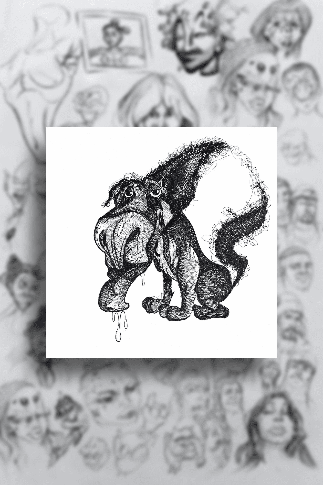
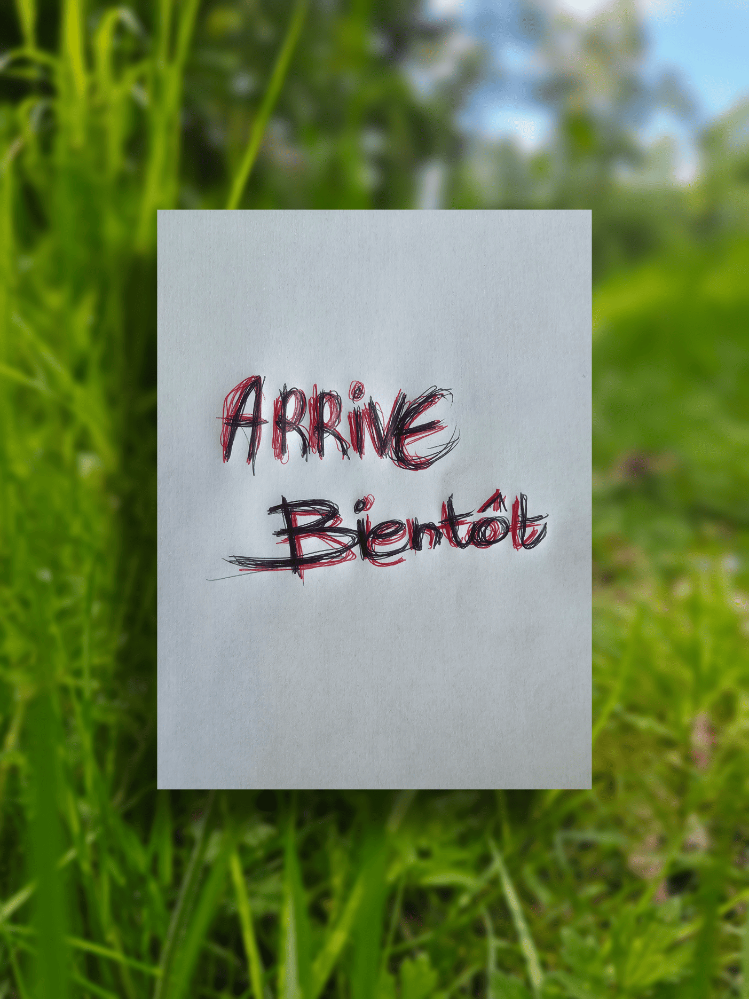
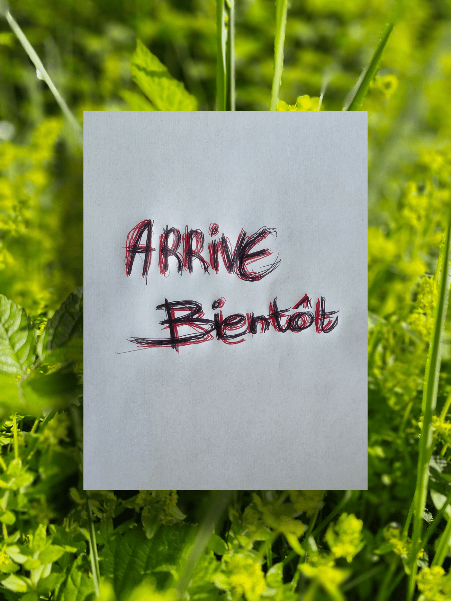

vitrine 02 / animaux & créatures
Animaux, instincts & créatures vivantes.
Cette vitrine rassemble les recherches animales, les silhouettes instinctives, les créatures hybrides et les dessins liés au vivant.
Certaines œuvres naissent d’observations réelles, d’autres de transformations plus étranges, entre anatomie, émotion et imagination organique.
note naturaliste
Observer avant de transformer.
Beaucoup de dessins commencent par des formes vivantes : postures, regards, tensions, comportements, textures, mouvements naturels.
esprit de la vitrine
Entre carnet animalier et transformation.
Cette partie du carnet mélange : étude, instinct, caricature, déformation, créature et expérimentation organique.
- Études animales
- Créatures hybrides
- Recherches instinctives
- Textures organiques
- Silhouettes vivantes
- Futures collections animalières
recherches / carnet vivant
Fragments d’expérimentation animale.
Cette vitrine évoluera progressivement avec de nouvelles recherches, études et futures collections liées au monde animal, aux instincts et aux créatures imaginées.

Texture organique

Créature en évolution
futur des collections
Ce qui arrivera progressivement.
collection animale
Originaux vivants
Dessins originaux liés aux recherches animales, instincts et transformations organiques.
bientôt
En préparation
éditions futures
Prints & séries
Futures éditions numérotées liées aux créatures, silhouettes et collections animales.
ouverture future
À venir
expérimentation
Carnets & recherches
Pages de recherches, croquis, fragments d’études et expérimentations vivantes.
carnet évolutif
En évolution
commande spéciale
Demander une création animale.
Il sera possible de demander : portrait animalier, créature hybride, caricature animale, composition instinctive ou dessin expérimental.
vitrine évolutive
Cette section grandira progressivement.
Nouvelles créatures, nouvelles recherches, nouveaux chapitres, nouvelles collections. Le carnet évoluera avec le vivant.